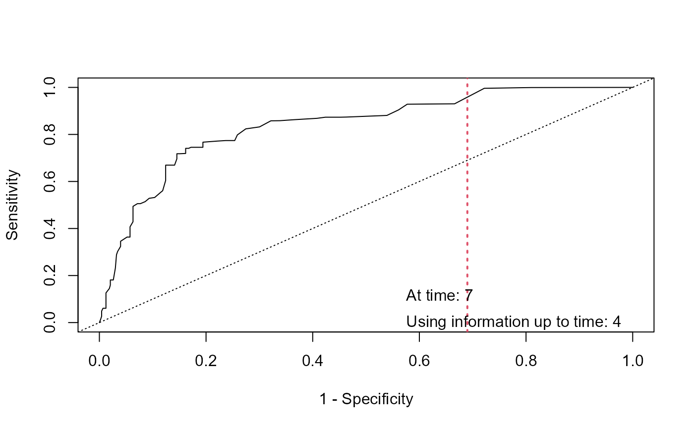

accuracy.RdUsing the available longitudinal information up to a starting time point, this function computes an estimate of the ROC and the AUC at a horizon time point based on joint models.
tvROC(object, newdata, Tstart, ...)
# S3 method for jm
tvROC(object, newdata, Tstart, Thoriz = NULL,
Dt = NULL, ...)
tvAUC(object, newdata, Tstart, ...)
# S3 method for jm
tvAUC(object, newdata, Tstart, Thoriz = NULL,
Dt = NULL, ...)
# S3 method for tvROC
tvAUC(object, ...)
calibration_plot(object, newdata, Tstart, Thoriz = NULL,
Dt = NULL, df_ns = 3, plot = TRUE, add_density = TRUE,
col = "red", lty = 1, lwd = 1,
col_dens = "grey", xlab = "Predicted Probabilities",
ylab = "Observed Probabilities", main = "", ...)
calibration_metrics(object, newdata, Tstart, Thoriz = NULL,
Dt = NULL, df_ns = 3, ...)
tvBrier(object, newdata, Tstart, Thoriz = NULL, Dt = NULL, ...)an object inheriting from class jm, except for tvAUC.tvROC() where this is an object of class tvROC.
a data.frame that contains the longitudinal and covariate information for the subjects for which prediction of survival probabilities is required. The names of the variables in this data.frame must be the same as in the data.frames that were used to fit the linear mixed effects and the event process model that were supplied as the two first argument of jm.
numeric scalar denoting the time point up to which longitudinal information is to be used to derive predictions.
numeric scalar denoting the time point for which a prediction of the survival status is of interest; Thoriz must be later than Tstart and either Dt or Thoriz must be specified. If Thoriz is NULL is set equal to Tstart + Dt.
numeric scalar denoting the length of the time interval of prediction; either Dt or Thoriz must be specified.
the degrees of freedom for the natural cubic spline of the cloglog transformation of the predicted probabilities used in the Cox model that assess calibration.
logical; should a plot be produced. If FALSE, a list is returned with the observed and predicted probabilities.
logical; should the kernal density estimation of the predicted probabilities be superimposed in the calibration plot.
graphical parameters.
additional arguments passed to predict.jm().
A list of class tvAUC with components:
a numeric scalar denoting the estimated prediction error.
a copy of the Tstart argument.
a copy of the Thoriz argument.
a numeric scalar denoting the number of subjects at risk at time Tstart.
the class of object.
the name of object.
A list of class tvROC with components:
accuracy indexes.
numeric scalars with the optimal cut-point using the F1 score and the Youden index.
numeric vector of thresholds.
a copy of the Tstart argument.
a copy of the Thoriz argument.
a numeric scalar denoting the number of subjects at risk at time Tstart.
the class of object.
the name of object.
Antolini, L., Boracchi, P., and Biganzoli, E. (2005). A time-dependent discrimination index for survival data. Statistics in Medicine 24, 3927--3944.
Harrell, F., Kerry, L. and Mark, D. (1996). Multivariable prognostic models: issues in developing models, evaluating assumptions and adequacy, and measuring and reducing errors. Statistics in Medicine 15, 361--387.
Heagerty, P. and Zheng, Y. (2005). Survival model predictive accuracy and ROC curves. Biometrics 61, 92--105.
Rizopoulos, D. (2016). The R package JMbayes for fitting joint models for longitudinal and time-to-event data using MCMC. Journal of Statistical Software 72(7), 1--45. doi:10.18637/jss.v072.i07.
Rizopoulos, D. (2012) Joint Models for Longitudinal and Time-to-Event Data: with Applications in R. Boca Raton: Chapman and Hall/CRC.
Rizopoulos, D. (2011). Dynamic predictions and prospective accuracy in joint models for longitudinal and time-to-event data. Biometrics 67, 819--829.
Rizopoulos, D., Molenberghs, G. and Lesaffre, E.M.E.H. (2017). Dynamic predictions with time-dependent covariates in survival analysis using joint modeling and landmarking. Biometrical Journal 59, 1261--1276.
# \donttest{
# We fit a multivariate joint model
pbc2.id$status2 <- as.numeric(pbc2.id$status != 'alive')
CoxFit <- coxph(Surv(years, status2) ~ sex, data = pbc2.id)
fm1 <- lme(log(serBilir) ~ ns(year, 3) * sex, data = pbc2,
random = ~ ns(year, 3) | id, control = lmeControl(opt = 'optim'))
fm2 <- lme(prothrombin ~ ns(year, 2) * sex, data = pbc2,
random = ~ ns(year, 2) | id, control = lmeControl(opt = 'optim'))
fm3 <- mixed_model(ascites ~ year * sex, data = pbc2,
random = ~ year | id, family = binomial())
jointFit <- jm(CoxFit, list(fm1, fm2, fm3), time_var = "year", n_chains = 1L)
roc <- tvROC(jointFit, newdata = pbc2, Tstart = 4, Dt = 3, cores = 1L)
roc
#>
#> Time-dependent Sensitivity and Specificity for the Joint Model jointFit
#>
#> At time: 7
#> Using information up to time: 4 (225 subjects still at risk)
#>
#> cut-off SN SP qSN qSP
#> 1 0.03 0.03642680 0.99823126 0.02778489 0.80101632
#> 2 0.07 0.04518369 0.98930824 0.02790194 0.39858834
#> 3 0.08 0.08019736 0.98717412 0.05499729 0.51902943
#> 4 0.12 0.12346496 0.98717412 0.09115031 0.63927207
#> 5 0.14 0.12346496 0.98158053 0.08694267 0.53951318
#> 6 0.15 0.13671117 0.97381826 0.09233651 0.46446436
#> 7 0.16 0.19832042 0.96737346 0.14105760 0.51060183
#> 8 0.17 0.21995423 0.96737346 0.16023780 0.54118922
#> 9 0.19 0.23792397 0.96642608 0.17563891 0.55563936
#> 10 0.21 0.25294506 0.96471632 0.18798376 0.55895396
#> 11 0.22 0.26808457 0.96303717 0.20057781 0.56228222
#> 12 0.23 0.28971837 0.96303717 0.22042260 0.58416811
#> 13 0.24 0.29428862 0.95862525 0.22164186 0.55669910
#> 14 0.25 0.31592242 0.95862525 0.24178594 0.57684914
#> 15 0.26 0.33055468 0.95681494 0.25433071 0.57753749
#> 16 0.30 0.35218848 0.95681494 0.27483785 0.59514010
#> 17 0.31 0.36470316 0.95445712 0.28529105 0.59011410
#> 18 0.33 0.38633696 0.95445712 0.30615988 0.60587894
#> 19 0.34 0.40797076 0.95445712 0.32723950 0.62047602
#> 20 0.35 0.42960456 0.95445712 0.34853313 0.63403044
#> 21 0.36 0.42960456 0.94886353 0.34520932 0.60325153
#> 22 0.37 0.45123836 0.94886353 0.36681349 0.61647648
#> 23 0.38 0.47287216 0.94326994 0.38547273 0.60111677
#> 24 0.42 0.47287216 0.93767635 0.38227207 0.57506602
#> 25 0.46 0.50938580 0.93033647 0.41593548 0.56460293
#> 26 0.47 0.53101960 0.93033647 0.43872027 0.57637041
#> 27 0.49 0.55265340 0.92474288 0.45885493 0.56582429
#> 28 0.50 0.57428721 0.92474288 0.48224120 0.57667869
#> 29 0.52 0.59592101 0.91914929 0.50318157 0.56687118
#> 30 0.54 0.63935725 0.90241212 0.54413136 0.53282397
#> 31 0.55 0.66099106 0.89122494 0.56413136 0.51051222
#> 32 0.56 0.66099106 0.88563135 0.56162636 0.49543241
#> 33 0.57 0.69066038 0.88211540 0.59534062 0.49954653 *
#> 34 0.58 0.69066038 0.87652181 0.59297419 0.48550756
#> 35 0.59 0.69066038 0.87092822 0.59057992 0.47197909
#> 36 0.61 0.69662509 0.86128326 0.59369432 0.45243394
#> 37 0.62 0.69662509 0.85009608 0.58879907 0.42833252
#> 38 0.63 0.70069295 0.83996068 0.58936533 0.40969102
#> 39 0.68 0.70204334 0.82912265 0.58617131 0.38972376
#> 40 0.69 0.72817567 0.80791142 0.61044284 0.36441278
#> 41 0.71 0.74980947 0.80791142 0.63914828 0.37362419
#> 42 0.72 0.74980947 0.80231783 0.63682020 0.36459302
#> 43 0.73 0.74980947 0.78553706 0.62965218 0.33898407
#> 44 0.74 0.77144327 0.78553706 0.65943534 0.34791672
#> 45 0.75 0.77144327 0.77994346 0.65716491 0.33983039
#> 46 0.76 0.77144327 0.77434987 0.65486401 0.33195686
#> 47 0.77 0.77144327 0.75756910 0.64777217 0.30953225
#> 48 0.78 0.77144327 0.75197551 0.64534301 0.30243112
#> 49 0.80 0.79730044 0.73628672 0.67654325 0.29362515
#> 50 0.81 0.79730044 0.73069313 0.67423285 0.28712888
#> 51 0.82 0.80231444 0.72080236 0.67768659 0.27793714
#> 52 0.83 0.81181251 0.69529021 0.68163771 0.25478583
#> 53 0.84 0.81811631 0.66335856 0.67776512 0.22709873
#> 54 0.85 0.81921401 0.64126801 0.66929392 0.20867944
#> 55 0.86 0.84515719 0.61441429 0.70222537 0.19669643
#> 56 0.87 0.87226428 0.58786149 0.74107624 0.18656874
#> 57 0.88 0.87690163 0.55549897 0.73621778 0.16656057
#> 58 0.89 0.87690163 0.54431179 0.73109579 0.15959142
#> 59 0.90 0.88010209 0.53395211 0.73290070 0.15434859
#> 60 0.91 0.88148452 0.50074801 0.71930545 0.13591001
#> 61 0.92 0.88516411 0.44576349 0.69602265 0.10926275
#> 62 0.93 0.88655973 0.42374997 0.68488815 0.09960933
#> 63 0.94 0.90819354 0.36781407 0.70490779 0.08231074
#> 64 0.95 0.93190143 0.31241443 0.74030207 0.06803161
#> 65 0.96 0.99864352 0.23458008 0.99273315 0.05890994
#> 66 0.97 0.99957593 0.12294935 0.99566295 0.02789953
#> 67 0.98 0.99962690 0.05024585 0.99067243 0.01067276
#>
tvAUC(roc)
#>
#> Time-dependent AUC for the Joint Model jointFit
#>
#> Estimated AUC: 0.8328
#> At time: 7
#> Using information up to time: 4 (225 subjects still at risk)
#>
plot(roc, legend = TRUE, optimal_cutoff = "Youden")

# }